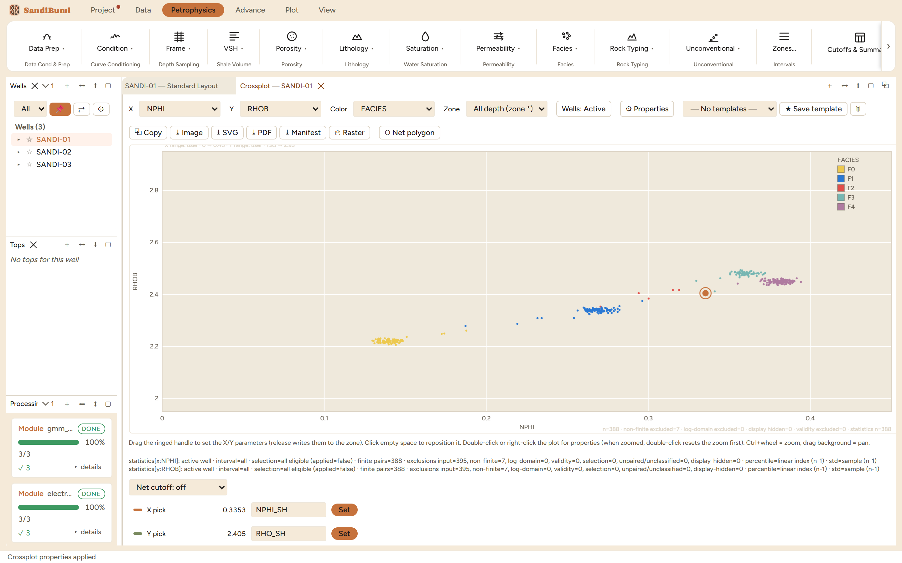
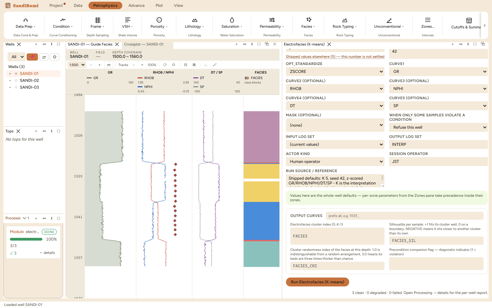

Unsupervised electrofacies: k-means clusters each well's samples in the space of up to five curves into K classes, and writes the class curve FACIES plus two per-sample quality curves. Reach for it when the section needs a lithology framework and no core description exists to train one: the classes are a data-driven starting point that an interpreter then names, merges, or rejects against the log. It is a description of the measurements, never a lithology until someone says so.
Each sample becomes a point in curve space, z-scored per curve by default so a gAPI axis and a g/cc axis carry equal weight. K-means (k-means++ seeding, best of eight starts, deterministic for a given seed) partitions the points into K clusters, and the labels are then ordered by the mean of the first supplied curve, so with GR first, FACIES 0 is the cleanest class and numbering is monotone in shaliness. Two diagnostics ride along, in the manifest's own words:
FACIES_SIL Silhouette per sample: +1 fits its cluster well, 0 on a
boundary, NEGATIVE means it sits closer to another cluster
than its own
FACIES_CRI Cluster randomness index of the facies at this depth: 1.0 is
indistinguishable from a random arrangement, 3.0 means its
beds are three times thicker than chance
3 clean. The pooled census over 1164 classified samples: 267 / 297 / 15 / 198 / 387 across facies 0 through 4, and the class GR medians run 45.0 / 52.4 / 80.4 / 104.8 / 109.9 gAPI, monotone as the ordering convention promises. The per-well censuses are identical (89 / 99 / 5 / 66 / 129 in each well), which on this example set is the tell that the three wells are statistical clones of one synthetic section. The quality curves: silhouette runs 0.09 / 0.75 / 0.93 at min / median / max with not one negative sample, and the randomness index medians 36.9, beds nearly forty times thicker than a random shuffle would draw. Re-running the same picks after an application rebuild reproduced the census to the sample: seeded means seeded.

Class 2's 15 samples are the number to interrogate, and the crossplot answers it: the red points are a boundary population, not a lithology. The variant makes the same point from the other side. K 4 on identical curves and seed yields 267 / 304 / 206 / 387: the two extreme classes and their populations survive untouched, and the 15 thin-class samples dissolve into the two classes they always sat between. Restoring K 5 reproduces the five-class census exactly.
